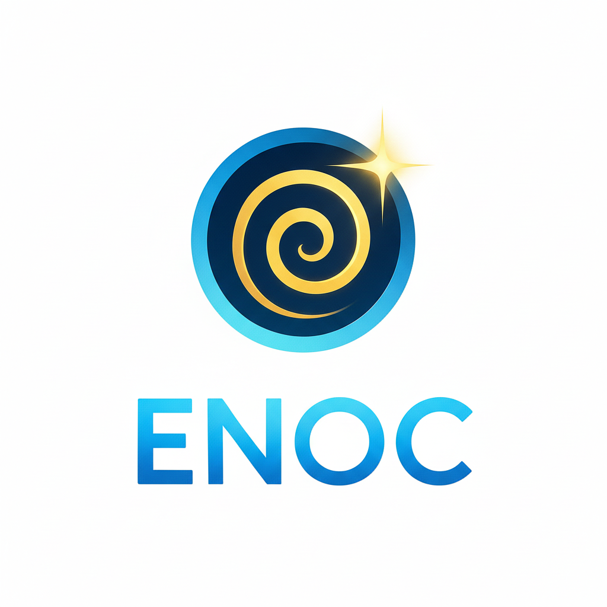

<!doctype html>
<html lang="es">
<head>
  <meta charset="utf-8" />
  <meta name="viewport" content="width=device-width,initial-scale=1" />
  <title>ENOC — Estados No Ordinarios de Conciencia</title>
  <style>
</head>
<body>
  <main class="page">
    <div class="hero">
      <div class="hero-inner">
        
        <h1 class="title">ENOC</h1>
        <p class="subtitle">Estados No Ordinarios de Conciencia — Token en Polygon (ENOC)</p>

        <div class="meta">
          <div class="contract">
            <label>Contrato</label>
            <div class="contract-row">
              <code id="contract">0xab8DF9213d13a3cDe984A83129e6acDaCBA78633</code>
              <button id="copyBtn" class="ghost">Copiar</button>
            </div>
          </div>

          <div class="links">
            <a id="btnBuy" class="btn primary" target="_blank" rel="noopener">Comprar ENOC</a>
            <a id="btnScan" class="btn ghost" target="_blank" rel="noopener">Ver en PolygonScan</a>
            <a href="https://t.me/enocon" class="btn alt" target="_blank" rel="noopener">Telegram</a>
          </div>
        </div>
        
        <p class="desc">
          ENOC es un token experimental en Polygon, creado para explorar modelos comunitarios, transparencia y crecimiento conciente.
        </p>

        <div class="how-to" id="howto">
          <h3>Cómo comprar ENOC — paso a paso</h3>

          <div class="step">
            <h4>1) Comprar con MetaMask (móvil o extensión)</h4>
            <ol>
              <li>Abrí MetaMask y seleccioná la red <strong>Polygon (Mainnet)</strong>.</li>
              <li>Añadí fondos (USDT en Polygon) o bridgéalos desde otra red.</li>
              <li>Ir a <em>Swap</em> en MetaMask y pegar la dirección del token ENOC (<code>0xab8DF9...6633</code>) en "To".</li>
              <li>Seleccioná la cantidad de USDT y ajustá el <strong>slippage</strong> al 1–3% (si tu pool es líquido, 1% está bien).</li>
              <li>Confirmá la transacción y espera la confirmación en PolygonScan.</li>
            </ol>
            <p class="small">Consejo: si el token no aparece en MetaMask, usá "Import token" y pega la dirección del contrato.</p>
          </div>

          <div class="step">
            <h4>2) Comprar desde DEXTools (interfaz rápida) </h4>
            <ol>
              <li>Abrí DEXTools y buscá el par <strong>ENOC / USDT</strong> (o pega la dirección del contrato).</li>
              <li>Usá el botón <em>Swap</em> que ofrece DEXTools para abrir QuickSwap/Uniswap con el par preconfigurado.</li>
              <li>Conecta tu wallet (WalletConnect o MetaMask) cuando te lo pida.</li>
              <li>Introduce la cantidad y confirma (revisa slippage y gas).</li>
            </ol>
            <p class="small">DEXTools facilita ver liquidez y actividad antes de comprar.</p>
          </div>

          <div class="step">
            <h4>3) Comprar en QuickSwap (backup)</h4>
            <ol>
              <li>Ir a QuickSwap: <a href="#" id="quickswapLink" target="_blank">Abrir QuickSwap</a>.</li>
              <li>Conectar wallet, elegir <strong>USDT → ENOC</strong> (pega la dirección ENOC si no aparece).</li>
              <li>Establecer slippage (1–3%) y confirmar swap.</li>
            </ol>
          </div>

          <div class="step">
            <h4>4) Comprar con Binance Wallet / WalletConnect</h4>
            <ol>
              <li>Desde Chrome en móvil, seleccioná "Connect" y elegí WalletConnect.</li>
              <li>Escoge tu wallet (Binance Wallet, OKX, Trust Wallet, MetaMask) en la lista.</li>
              <li>Sigue el flujo: aceptar conexión → aprobar swap → confirmar</li>
            </ol>
            <p class="small">World App puede conectar pero no todas las wallets permiten swaps desde su WebView. Si la wallet no realiza el swap, usa MetaMask o Trust.</p>
          </div>

          <p class="disclaimer">Importante: en todas las compras revisá siempre la dirección del contrato y el slippage para evitar pérdidas. Empieza con montos pequeños para probar.</p>
        </div>

        <div class="cards">
          <div class="card">
            <h4>Red</h4>
            <p>Polygon (Matic)</p>
          </div>
          <div class="card">
            <h4>Símbolo</h4>
            <p>ENOC</p>
          </div>
          <div class="card">
            <h4>Tipo</h4>
            <p>ERC-20 (Polygon)</p>
          </div>
        </div>

        <p class="hint">Nota: para comprar desde la web recomendamos MetaMask/Trust/WalletConnect. Si usas World App, usa la mini-app nativa.</p>

        <p class="credit">© ENOC — Proyecto comunitario</p>
      </div>
    </div>

    <div id="bg-stars" class="bg-stars" aria-hidden="true"></div>
    <div id="bg-portal" class="bg-portal" aria-hidden="true"></div>
  </main>

  <script>
    const CONTRACT = "0xab8DF9213d13a3cDe984A83129e6acDaCBA78633";
    const USDT = "0x2791Bca1f2de4661ED88A30C99A7a9449Aa84174";
    const ENOC = CONTRACT;
    const quickswapURL = `https://quickswap.exchange/#/swap?outputCurrency=${ENOC}&inputCurrency=${USDT}`;

    document.getElementById("contract").innerText = CONTRACT;
    document.getElementById("btnBuy").href = quickswapURL;
    document.getElementById("btnScan").href = `https://polygonscan.com/token/${CONTRACT}`;
    document.getElementById("quickswapLink").href = quickswapURL;

    document.getElementById("copyBtn").addEventListener("click", async () => {
      try {
        await navigator.clipboard.writeText(CONTRACT);
        const btn = document.getElementById("copyBtn");
        btn.innerText = "Copiado";
        setTimeout(()=> btn.innerText = "Copiar", 1500);
      } catch (e) {
        alert("No se pudo copiar. Copia manualmente: " + CONTRACT);
      }
    });
  </script>
</body>
</html>
